Concevez votre drone FPV. Évaluez sa vitesse, sa puissance et son autonomie avant de le construire.
Poussée, vitesse maximale, autonomie et accélération transitoire (0 → 100 km/h) calculées à partir de composants réels du marché et validées en situation réelle par des données GPS. Du châssis 3 pouces au cinelifter X8, jusqu'au Quad Speeder à fuselage profilé, modélisez en 2D, en 3D, et accédez désormais au calcul CFD OpenFOAM.
L'assurance d'une configuration performante et optimisée
Calcul instantané
Configurez votre architecture complète en 30 secondes. Sélectionnez vos composants et visualisez immédiatement l'impact sur la vitesse de pointe, l'autonomie et l'accélération transitoire (0 → 100 km/h).
Fiabilité physique
Un modèle prédictif validé par des essais en vol mesurés au GPS. Les algorithmes intègrent la traînée aérodynamique, l'assiette de l'appareil, les variations de densité de l'air ainsi que le profil de décharge réel de votre batterie.
Compatibilité vérifiée
Une validation technique stricte avant la commande. Le système vérifie automatiquement la cohérence électrique et mécanique (couplage moteur / ESC / hélice) et génère votre nomenclature matérielle (BOM) optimisée par revendeur.
Protocole de conception
Sélection des composants
Configurez la chaîne de propulsion et les éléments critiques : moteurs, hélices, châssis, batterie et électronique. Accédez à une base de données de plus de 1 000 références industrielles réelles avec filtres multicritères.
Analyse des performances
Évaluez instantanément les indicateurs clés : vitesse de pointe, autonomie, courbe de poussée, accélération et seuils d'alerte critiques, mis à jour dynamiquement à chaque modification.
Validation PRO
Optionnelle : vérification aérodynamique en soufflerie virtuelle, puis calcul CFD OpenFOAM du modèle réel (traînée S·Cx, carte de pression, fichiers ParaView).
Benchmark & Exportation
Sauvegardez vos différentes configurations, effectuez une analyse comparative (benchmark) et exportez votre nomenclature matérielle (BOM) incluant les liens d'approvisionnement.
Choisissez juste, en 30 secondes
Choisissez vos moteurs, hélices, châssis, batterie et électronique : les performances se recalculent en direct, avec les prix et les liens d'achat de chaque pièce.
Une interface pensée pour les pilotes
- Filtres multicritères avancés : tri instantané par dimensions de cellule, géométrie de châssis, équipementier, constante de vitesse (KV), pas d'hélice, configuration de cellules (S) et capacité nominale.
- Persistance des données : sauvegarde automatique de l'état de votre configuration lors de la navigation entre le simulateur, la documentation technique et le wiki.
- Modélisation des conditions atmosphériques : intégration des variables d'environnement (altitude-densité, température, hygrométrie et pression calée au niveau de la mer, QNH).

Vitesse max
Point d'équilibre poussée / traînée à l'inclinaison de vol : poussée dynamique décroissante jusqu'à la vitesse de pas (T = T0 (1 − V / Vpas)), traînée S·Cx selon l'assiette, densité de l'air du jour.
Autonomie par style de vol
Courant moyen pondéré par profil de vol (cinématique, freestyle, plein gaz), courbe de décharge propre à la chimie (LiPo, LiHV, Li-ion) et capacité utilisable avant atterrissage.
Alertes de sécurité
Contrôle de compatibilité avant achat : courant crête moteur contre courant continu / burst de l'ESC, tension (S) contre KV de référence, connecteur, diamètre d'hélice contre châssis.
0 → 100 km/h
Accélération théorique horizontale et verticale, déduite de la poussée excédentaire et de la masse au décollage (AUW).
Plus de 200 châssis
Base de châssis référencés : masse, entraxe moteurs, taille et typologie (freestyle, cinewhoop, long range…), filtrable, en Free comme en PRO.
3 architectures
Quadrirotor X et cinelifter X8 coaxial (électronique esclave dédiée) en Free ; Quad Speeder à fuselage profilé en PRO.
Votre liste d'achat, groupée par revendeur
- Chaque pièce choisie arrive dans la nomenclature, avec son prix et son lien d'achat.
- Le panier regroupe les pièces par boutique : vous ouvrez chaque site une seule fois.
- Quantités réelles : 4 moteurs, hélices, antennes vendues par paire comptées par lot.
- Prix en EUR ou USD, export PDF / CSV de la liste.
Aucun site marchand ne permet d'ajouter un article à son panier depuis l'extérieur : le regroupement par boutique est la façon la plus rapide d'acheter sans rien oublier.
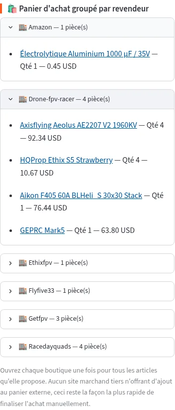
Sauvegardez, comparez, partagez
- Enregistrez vos configurations et comparez-les côte à côte : moteur, hélice, batterie, masse, poussée, vitesse, coût.
- Rechargez une configuration dans les réglages en un clic.
- Free : 3 configurations gardées dans le lien de la page (favori = sauvegarde, lien = partage). PRO : 10 configurations en ligne, sur tous vos appareils.
- Export Markdown (Discord, forum), CSV (Excel) ou PDF.
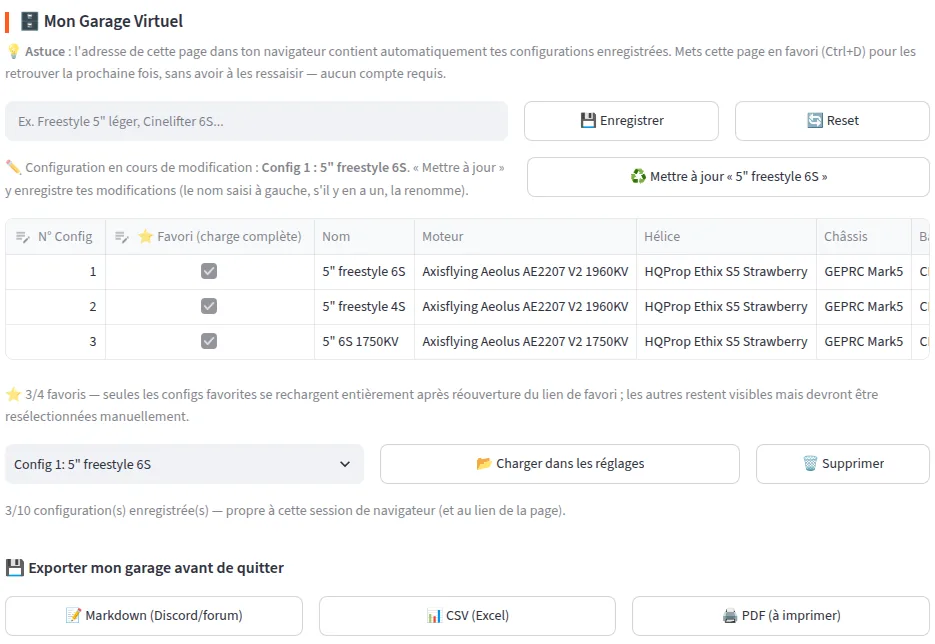
Calé sur de vrais vols, pas sur une brochure
Le modèle aérodynamique est ajusté et vérifié sur des vols plein gaz mesurés au GPS. Il tient compte de l'inclinaison réelle du drone, de la baisse de poussée avec la vitesse, de la densité de l'air et du format de la batterie. Le CFD vient maintenant compléter ces mesures pour les formes que le vol n'a pas encore testées.
Vol de référence mesuré au GPS
| Châssis | TOWA 5″ freestyle, 539 g |
| Moteurs / hélices | XING-E 2207 2450KV · Ethix S5 |
| Batterie | 3S 1550 mAh |
| Conditions | 1 046 m · 0 °C · 35° |
| 2e vol de contrôle | 126 km/h · 436 m · 10 °C |
Des drones qui volent vraiment
Les mesures qui ont servi à caler le simulateur, et ce que donne le même TOWA 5″ une fois allégé et réglé.


Le simulateur est calé sur les vols de référence à 121 et 126 km/h (configuration d'origine, sans vent). Les 145 km/h ont été atteints après allègement et réglages Betaflight ; les 186 km/h avec le vent dans le dos.
Passez du calculateur à l'atelier de conception
Conception paramétrique de châssis et de drones haute vitesse, modélisation 3D, import de vos plans CAO, validation aérodynamique (soufflerie virtuelle, CFD) et recalage du modèle sur vos mesures de vol.
Modélisation à l'échelle
- 5 architectures supportées : X, Dead Cat, Squished X, Stretch X, H-Frame, en configuration Quad ou X8 coaxial.
- Esquisse paramétrique : génération automatique de la géométrie 2D (projections dessus et face) à chaque modification des variables saisies.
- Maquette 3D : modèle volumique inclinable, avec la surface frontale projetée calculée à chaque incidence.


UAV haute vitesse : configurations propulsive (pusher) ou tractive (tractor)
- Profil aérodynamique : fuselage de type « goutte d'eau ». Optimisation du coefficient de traînée (Cx) basée sur la finesse, d'après la méthodologie Hoerner.
- Architecture de propulsion : configuration propulsive intégrée (type SPEEDER V2) ou tractive sur nacelles dédiées (architecture type Blackbird).
- Incidence du fuselage : assiette de 0° en régime de vol rapide face au vent (traînée minimale) et calage à 90° lors des phases de décollage / stationnaire.
- Modélisation STL : intégration géométrique à échelle nominale incluant le volume de la batterie et le positionnement paramétrable du centre de gravité (CoG).


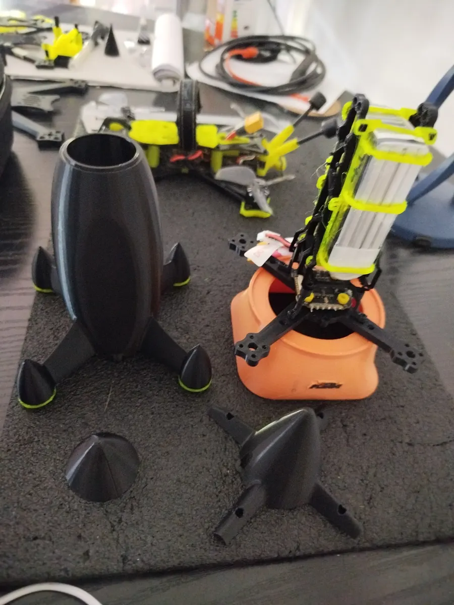
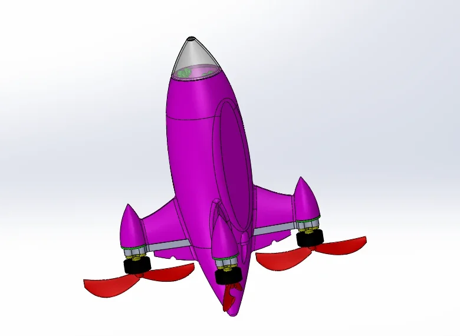
Vos modèles SolidWorks, Fusion 360 ou Onshape
- STL : maillage 3D surfacique pour la simulation aérodynamique et le calcul CFD multi-angles.
- DXF : projections orthogonales (vues de dessus et de face) substituant l'esquisse native, avec conservation des cotes initiales.
- Modélisation volumique 3D : les vues en plan (dessus + face ± profil) suffisent à l'extrudeur pour la reconstruction géométrique de votre drone.
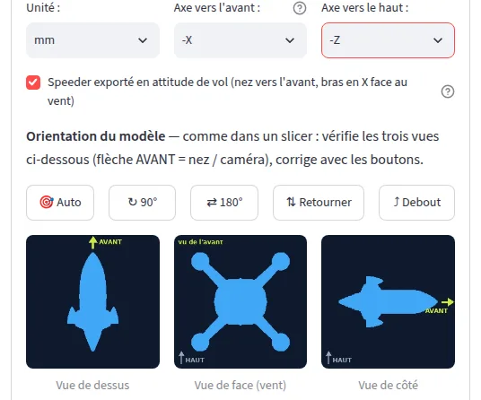
Des plans DXF au modèle 3D, en 3 étapes
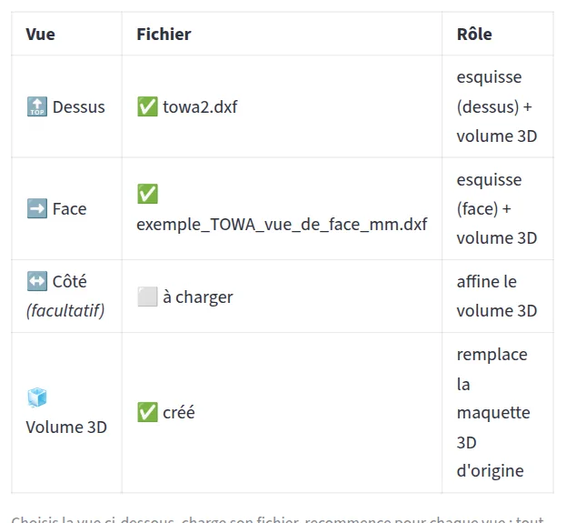
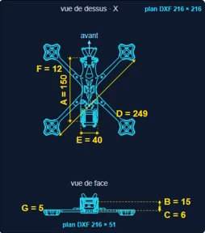
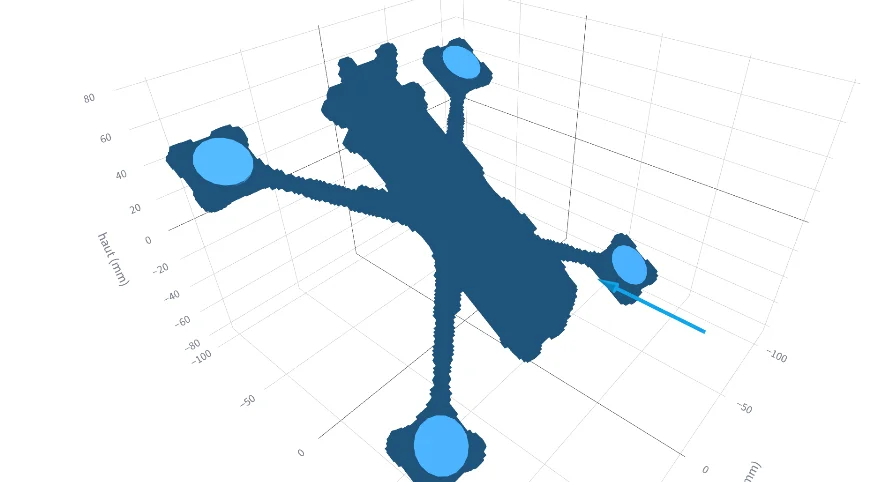
L'estimation instantanée, en amont de la résolution CFD
- Équilibre aérodynamique : calcul immédiat de l'inclinaison d'équilibre, de la traînée, de la puissance aérodynamique absorbée et de la poussée requise.
- Modélisation dynamique des rotors : intégration du sillage aérodynamique des hélices en rotation, calcul de la perte de poussée par interaction avec le châssis (effet de sillage) et répartition de charge avant / arrière.
- Génération instantanée : rendu en temps réel pour l'exploration de concepts ; validation finale par résolution des équations CFD.
Le module de soufflerie applique les formulations analytiques du simulateur, calées sur des données de vol réelles. Les lignes de courant et les particules illustrent l'écoulement. Le calcul CFD, quant à lui, résout numériquement les équations de Navier-Stokes autour de votre maillage STL.
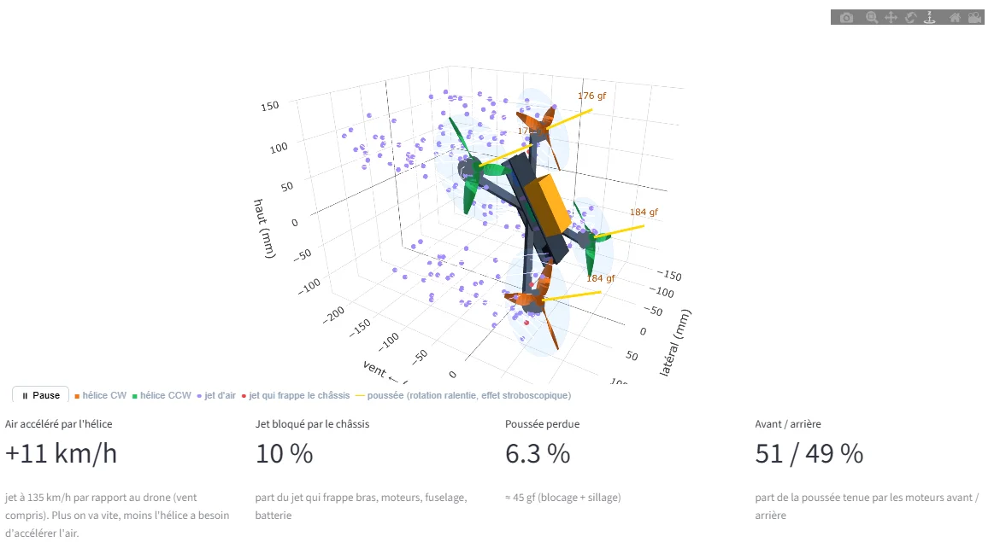
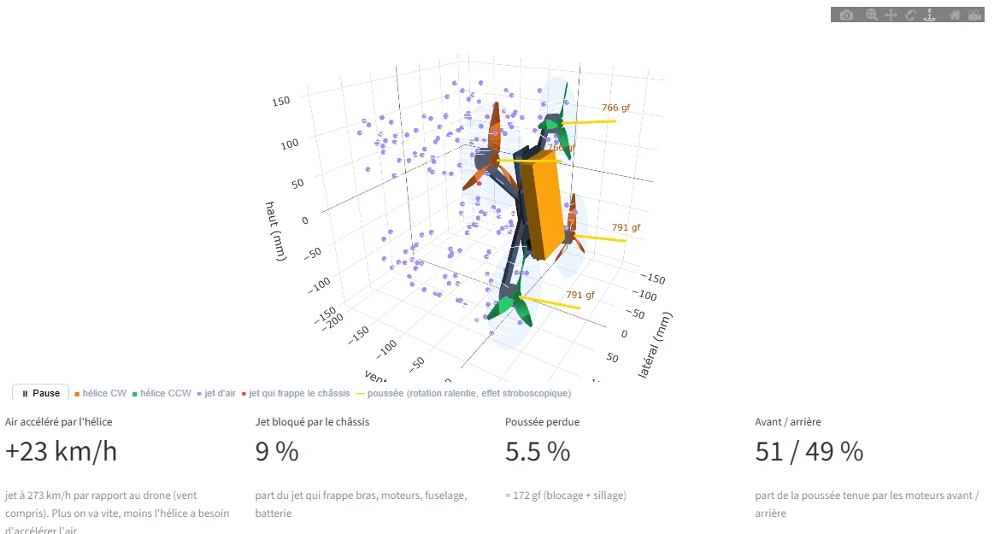
Vos mesures réelles comme référentiel d'étalonnage
- Calibration par données GPS : saisissez la vitesse maximale mesurée lors de vos essais ; l'algorithme ajuste instantanément le coefficient de traînée et mémorise ce profil d'étalonnage.
- Bibliothèque Cloud : centralisez jusqu'à 10 configurations matérielles et l'historique de vos simulations CFD pour l'ensemble de votre flotte de drones.

La puissance d'une résolution CFD complète, l'accessibilité en plus
Traditionnellement, une analyse CFD complète impose des phases de pré-traitement complexes (domaine de calcul, discrétisation du maillage, conditions aux limites, convergence des solveurs). Notre solution intègre un pipeline entièrement automatisé et vérifié. Saisissez vos paramètres opérationnels (assiette et vitesse) : la résolution numérique est déportée et exécutée de manière transparente sur notre serveur de calcul dédié.
-
1 · Exportation STL
Exporté depuis SolidWorks, Fusion 360 ou Onshape. Orientation géométrique contrôlée sur 3 vues orthogonales (comme dans un slicer).
-
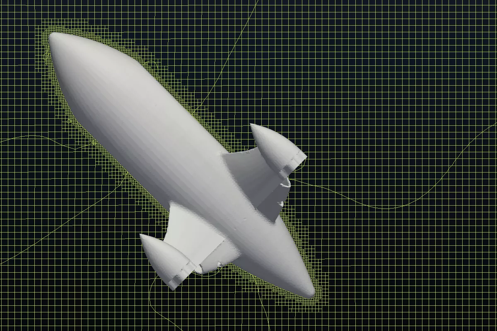
2 · Maillage automatiséRéparation du maillage STL et dimensionnement du domaine fluide à l'échelle de l'aéronef : discrétisation snappyHexMesh d'environ 1 million de mailles, raffinement progressif près des parois et dans le sillage ; en exigence maximale, 5 couches limites prismatiques plaquées sur la paroi.
-
3 · Résolution OpenFOAM
Solveur
simpleFoam, modèle de turbulence k-ω SST avec loi de paroi de Spalding, jusqu'à stabilisation de la traînée. Sans convergence, la résolution est prolongée (+50 % d'itérations), puis le résultat est explicitement signalé « non convergé ». -
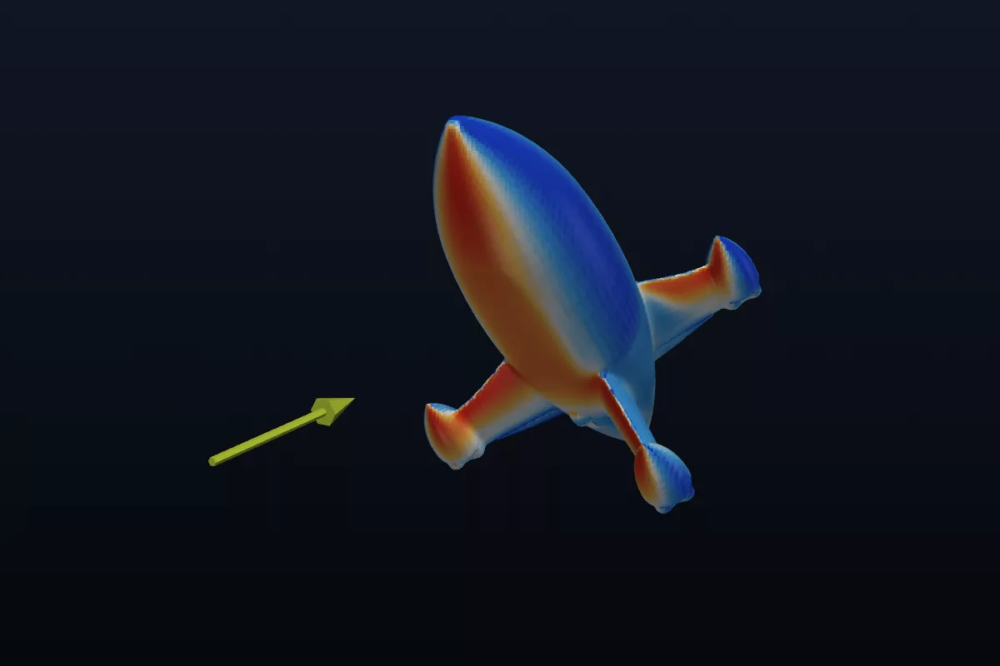
4 · Post-traitement intégréTraînée S·Cx, coefficient de traînée équivalent Cx, portance, corrélation avec le modèle analytique et cartographie des pressions 3D.
-
5 · Export ParaView
Données de surface, plans de coupe et lignes de courant au format VTK, avec une macro d'automatisation pour la visualisation des flux.
Géométrie personnalisée
Affranchissez-vous des formes génériques : soumettez l'architecture exacte de votre châssis, fuselage et batterie tels que vous les avez modélisés.
Validation à chaque étape
Contrôle qualité du maillage (checkMesh), jusqu'à 3 tentatives de maillage, critère de convergence : variation de la traînée inférieure à 3 % sur les 100 dernières itérations (1 % en exigence maximale, avec couches limites, au choix de l'utilisateur). Exclusion stricte des valeurs aberrantes : toute anomalie lève une alerte explicite.
Simulations multi-incidences
Évaluez en un seul envoi jusqu'à 3 incidences : régimes stationnaire, de transition et haute vitesse (jusqu'à 800 km/h pour les profils Speeder).
La marche à suivre complète (lancer le calcul, lire les résultats, animer l'air dans ParaView) est détaillée pas à pas dans le Mode d'emploi de l'app.
Là où l'air appuie, là où il décroche
La pression sur chaque surface montre d'où vient la traînée : rouge, l'air bute sur le drone ; bleu, il est aspiré. Derrière, le sillage montre l'air freiné que le drone traîne avec lui.
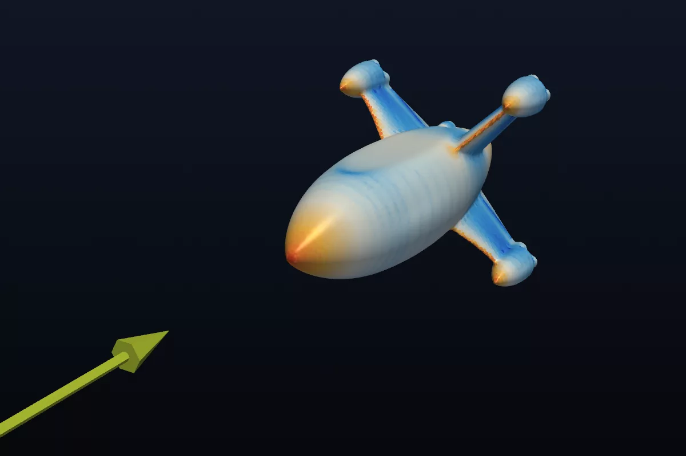
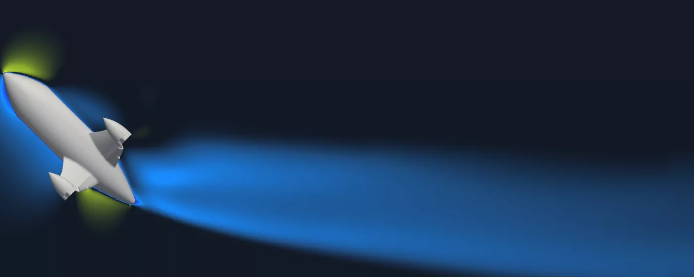
🎬 Rendu vidéo de votre STL : en option avec chaque calcul CFD, le serveur fabrique cette vidéo (1920 × 1080) à partir de votre modèle ; elle se regarde et se télécharge en .mp4 depuis l'app.
Fuselage dans le vent : 5 fois moins de traînée
- À plat dans le vent, le Speeder V2V n'offre que 9 cm² de S·Cx : un Cx équivalent de 0,22, celui d'une goutte d'eau imparfaite.
- Incliné à 45°, le même drone monte à 45 cm² : cinq fois plus. Garder le fuselage dans le vent, c'est la clé de la vitesse.
- Recalculé à 500 km/h par le serveur TALKTRUE : 8,3 et 44 cm², le Cx reste quasi identique.
- Le calcul rapide de l'app (Cx fixe 0,68 pour un STL) surestime la traînée d'un Speeder bien profilé : le CFD le corrige.
RANS stationnaire, sans les hélices ni leur souffle, lois de paroi : ordre de grandeur ±15 à 25 %. À confirmer par un vol GPS, comme tout le reste du simulateur.
| Cas (120 km/h) | Calcul rapide | CFD OpenFOAM | Cx |
|---|---|---|---|
| Speeder V2V · fuselage 0° | 28,8 cm² | 9,2 cm² | 0,22 |
| Speeder V2V · fuselage 45° | 59,8 cm² | 45,5 cm² | 0,52 |
S·Cx = traînée ÷ (½ ρ V²). Maillages 1,0 à 1,3 M de cellules, convergence < 0,3 %.
Conçu par un pilote qui construit ses drones
Châssis découpés, pièces imprimées en 3D, câblage et pesée : le simulateur est né de l'atelier, pour savoir avant de construire.
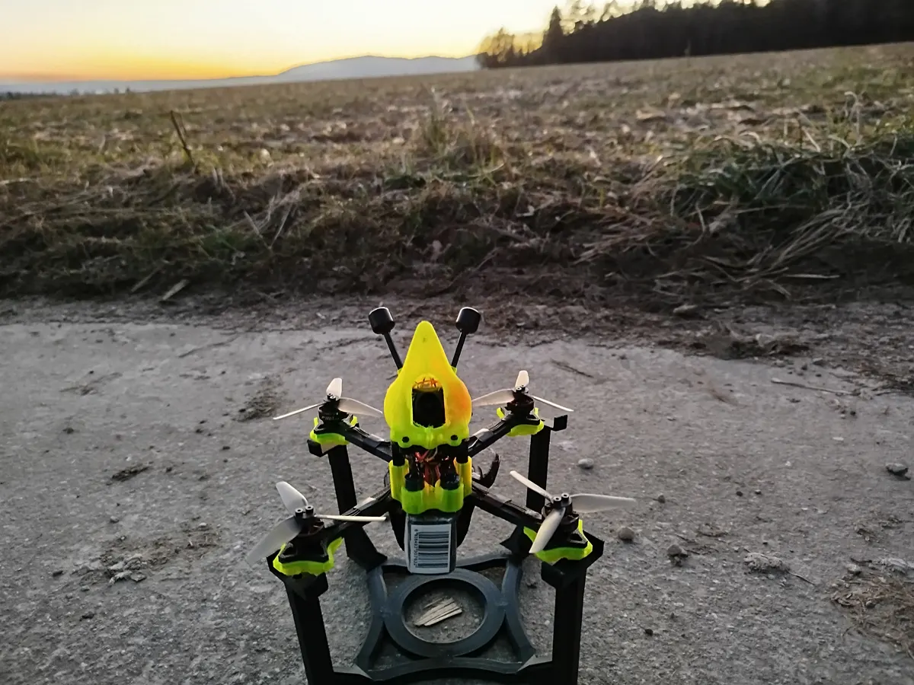
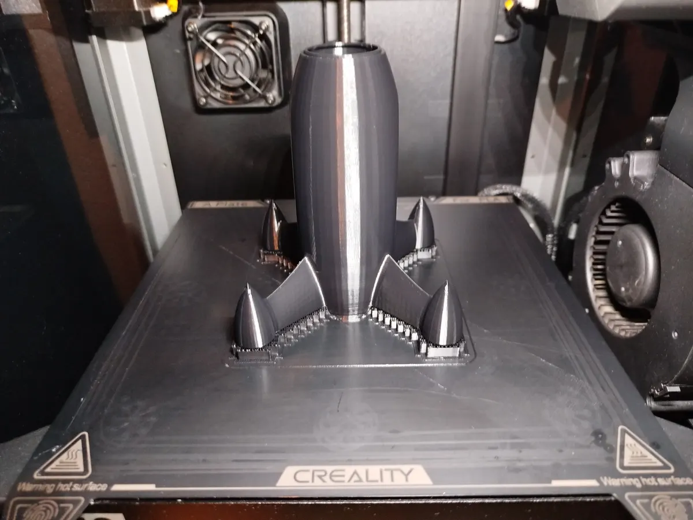
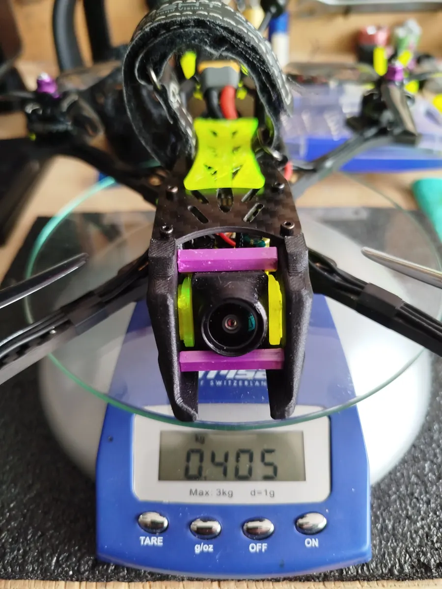
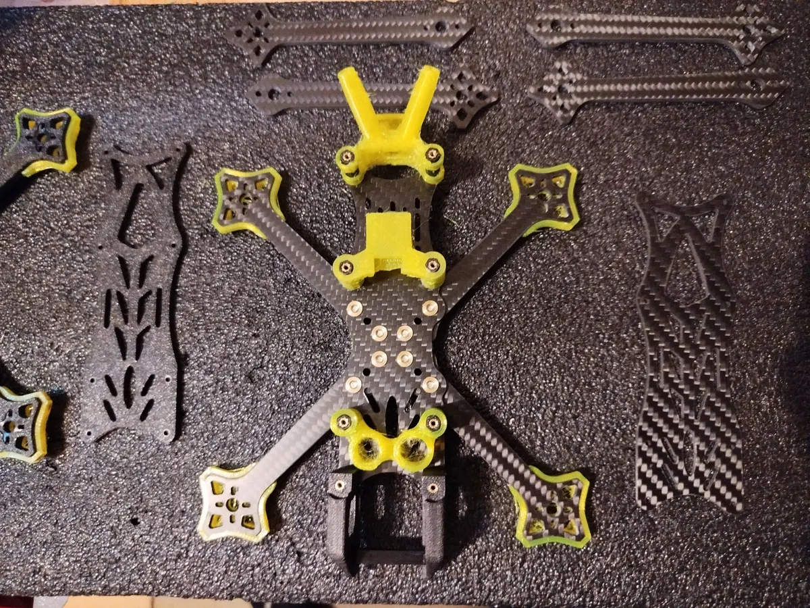
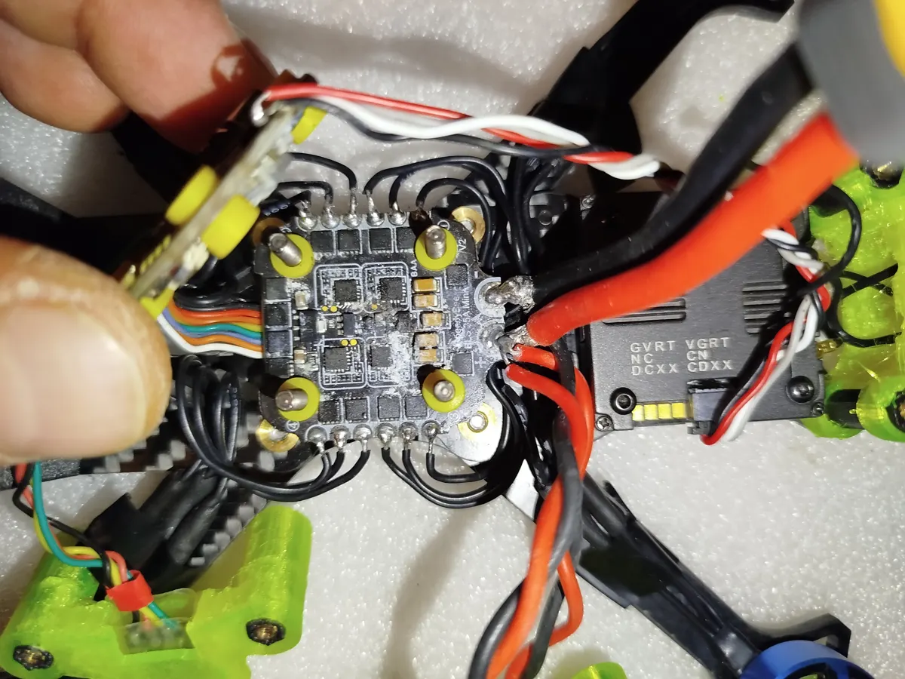
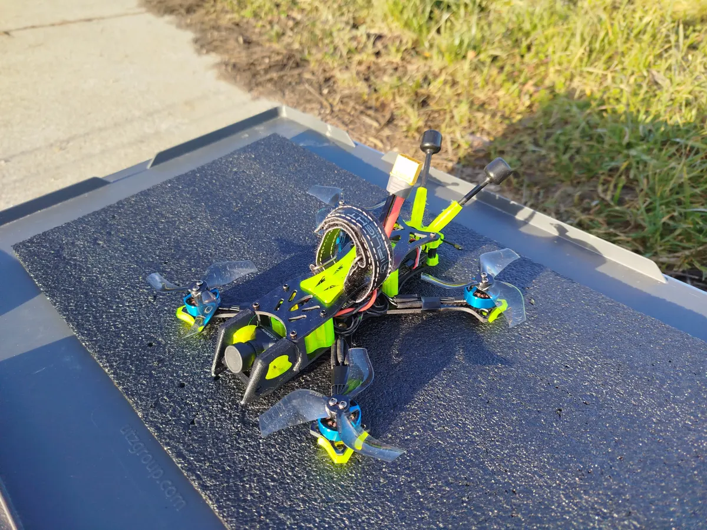
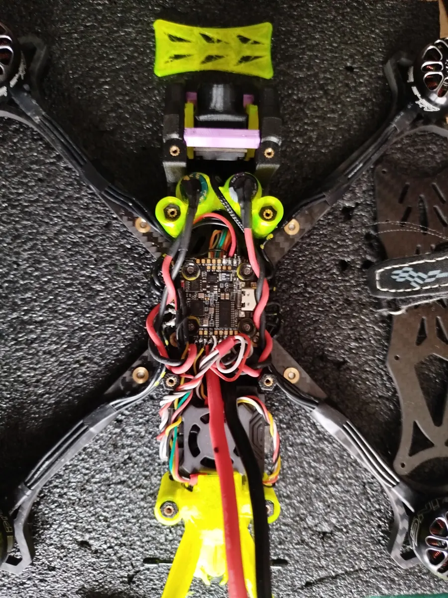
Free ou PRO
Free
- Calculateur complet : poussée, vitesse, autonomie, 0 → 100 km/h
- Plus de 1 000 composants et plus de 200 châssis
- Alertes de sécurité
- Panier groupé par revendeur, export PDF / CSV
- Garage de 3 configurations
PRO · Offre Fondateur
- Tout le Free, plus :
- Garage de 10 configurations en ligne, tous appareils
- Soufflerie virtuelle
- Calcul CFD OpenFOAM de votre modèle (10 par mois) + fichiers ParaView + rendu vidéo
- Châssis prototype et Quad Speeder en 3D
- Import STL / DXF de votre CAO, recalage GPS
Réservé aux 100 premiers. Paiement unique sur Ko-fi : indiquez votre e-mail dans le message, vous recevez votre code personnel sous 24 h. Question : talktruefpv@gmail.com
Questions fréquentes
Le simulateur est-il gratuit ?
Oui. Le calculateur complet (poussée, vitesse, autonomie, accélération), plus de 200 châssis, les alertes de sécurité, le panier groupé par revendeur et un garage de 3 configurations sont gratuits et sans inscription. Le PRO ajoute le garage de 10 configurations en ligne, la soufflerie, le calcul CFD, le châssis prototype, le Quad Speeder, la 3D, l'import STL/DXF et le recalage GPS.
Qu'est-ce que le calcul CFD ?
Un vrai calcul d'écoulement de l'air autour de votre drone, fait avec OpenFOAM (le logiciel CFD libre utilisé dans l'industrie) à partir de votre fichier STL. Vous obtenez la traînée mesurée (S·Cx), le Cx équivalent, la portance, une carte de pression 3D et un paquet de fichiers pour ParaView.
Faut-il savoir utiliser OpenFOAM ?
Non. Vous chargez votre STL, vous choisissez l'inclinaison et la vitesse, et le serveur de calcul fait tout : réparation du STL, domaine, maillage snappyHexMesh, calcul k-ω SST jusqu'à convergence, contrôles. Rien à installer sur votre ordinateur.
Combien de temps dure un calcul ?
Quelques dizaines de minutes par inclinaison, selon la taille du modèle et la file d'attente. Vous pouvez fermer l'app : le calcul continue et le résultat vous attend dans l'onglet 🌀 Calcul CFD.
Comment voir les résultats dans ParaView ?
Chaque calcul fournit un zip pour ParaView (gratuit) : surface du drone, lignes de courant et une macro qui fait défiler l'air. Le pas à pas illustré est dans le Mode d'emploi de l'app.
Le CFD est-il exact ?
C'est un calcul stationnaire (RANS) sans les hélices ni leur souffle, avec des lois de paroi : comptez ±15 à 25 %. Il est idéal pour comparer des formes et voir d'où vient la traînée. La vitesse réelle se confirme par un vol GPS, sur laquelle vous pouvez recaler le simulateur.
Et la soufflerie virtuelle ?
C'est l'estimation instantanée : mêmes formules que la vitesse max, calées sur des vols GPS, avec l'écoulement et le jet des hélices illustrés. Utilisez-la pour explorer, puis le calcul CFD pour trancher.
Quelle différence avec eCalc ?
eCalc est une référence pour le calcul pur. TALKTRUE FPV est une plateforme de conception : calcul CFD de votre propre modèle, composants réels avec prix et liens d'achat, garage de configurations, esquisses cotées, maquettes 3D et import de vos plans de CAO.
Qui est BOB ?
BOB le Racer, c'est le drone de course à canopée jaune qui a inspiré le logo TALKTRUE FPV : sa silhouette est au centre de la sphère. L'effigie de la marque, et un vrai drone qui vole.
Comment obtenir un accès PRO ?
Avec l'offre Fondateur : 24 € une seule fois, accès PRO à vie, réservée aux 100 premiers. Payez sur Ko-fi en indiquant votre e-mail dans le message, et vous recevez votre code personnel sous 24 h. Une question : talktruefpv@gmail.com ou Instagram @talktruefpv.
De l'idée au vol, sans rien perdre en route
Choisissez vos pièces, lisez votre vitesse, comparez dans votre garage, puis achetez boutique par boutique.
🚀 Débuter gratuitement